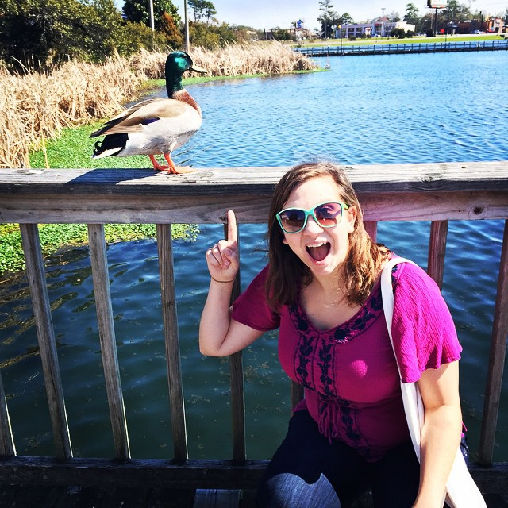

Hey there and welcome to my website! My name is Mallie Baker, and I am an aspiring school counselor. Ever since I was a young teenager I knew that counseling was the field I wanted to peruse. On behalf of the other kids I was always standing up to the bullies and mediating between my peers. In fact, when I was in 7th grade our resident mean girl was passing around a petition and having people sign it to say that they hated another girl. I was very upset by this, so I walked right up to her and told her that what she was doing was really hurtful and that she should rip up her petition and throw it away. To my surprise instead of lashing out at me she listened, she ripped it up and thanked me for helping her see that she was being a bully. From this moment on I was hooked on helping people. I discovered that my words and actions could help people, and I really loved that. Fast forward to the present, I am currently attending the University of South Carolina and earning my Ed.S in Counselor Education. I graduate in May and am a mix of terrified and super excited! I am finally getting to do what I love, and I am so thrilled to start the next chapter of my life and get to help kids full time!

Mallie Baker
Professional School Counselor
malliebaker@me.com Call Me Today
